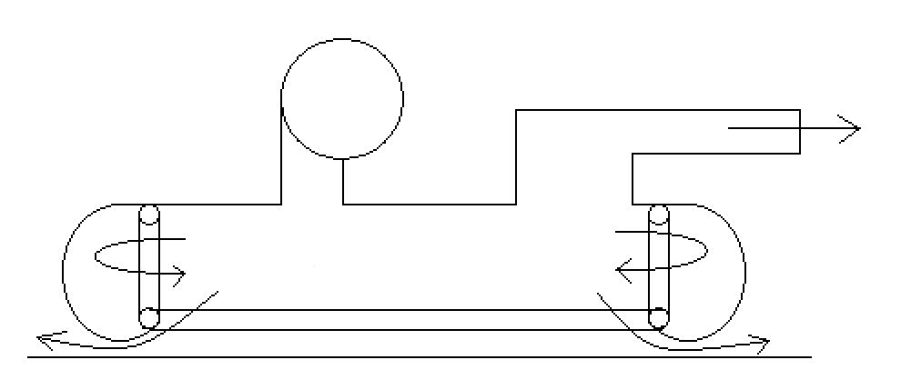

The blower creates a pressurized chamber underneath the hovercraft.
Once enough pressure has been built up (total weight of hovercraft / area),
a small amount of air escapes under the skirt to create an air cushion
A hole is cut in the pressurized chamber to allow air to escape. This
becomes the nozzle and provides the thrust
Use the calculator to determine the
blower specs that you will need
Skirt Design
The skirt inflates to lift the hovercraft (much like an air mattress).
Once the skirt has inflated, the excess air escapes under the skirt to
create an air cushion, which is nearly frictionless. The skirt must be
designed to allow for free airflow to either the skirt or the rest of the
bottom of the hovercraft to allow this to happen.

Drive System
V-belt drives like what is used on yard equipment work well
If you are going to use a clutch, be sure the clutch can handle the
load of the blower without slipping. A clutch may not be needed if
you use a large enough engine to handle the load of the blower while
it is starting
Split taper bushings generally work well for attaching the pulleys to
the engine and blower. Refer to any documentation that comes with the
engine, blower, or drive components to ensure they are attached properly.
Generally the higher quality belts have a higher efficiency than the
lower quality belts. This may seem obvious, but it could be the reason
the blower is not being driven effectively enough to get the intended
performance out of it
It is extremely important that everything on the drive system is lined
up properly, and both the engine and blower are rigidly mounted. Be
sure the belt is tensioned properly. Too loose and it will slip or be
thrown off. Too tight and the belt will burn up
Design the hovercraft in such a way that the operator and bystanders
are shielded from the drive system in case anything comes loose
Consider investing in a tachometer. The tachometer can measure the speed
of the engine vs the speed of the blower. This will allow you to
calculate the efficiency (actual blower speed vs expected blower speed
at the actual engine speed). Aim for 90% or above efficiency
Other things to consider
Weight is important when designing and building the hovercraft. The
more weight you have, the less it will hover, which will affect overall
performance. Use lightweight materials when building the hovercraft
(ex. PVC pipes vs 2x4’s or metal pipes)
Some blowers show the power recommendations for the electric motor that
can be used with them (many blowers are used in a/c systems and are usually
driven by an electric motor). Use this as a guide to determine what size
motor you will need to drive the blower